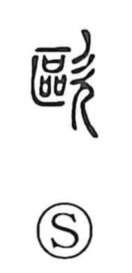

欧

Uncategorized
Kun: | On: ou
europe ・ to sing ・ to vomit
Explanation
Originally written as 歐, the character combines 區 and 欠. 欠 depicts a person in profile with the mouth open, while 區 centers on 匸, a hidden precinct, within which many ritual ‘sai’—vessels holding written covenants and prayers to the gods—are arranged. Together they evoke opening the mouth to let a deep, humming prayer rise. From this image came the sense “to sing,” and by visual analogy with an open mouth expelling something, it was also used for “to vomit.” In later times the graph was borrowed to write Europe.